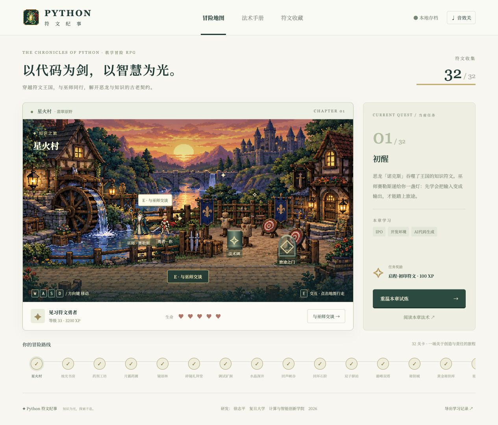

A PIXEL ADVENTURE THROUGH PYTHON
用代码开启
一场冒险。
勇者、巫师，与一条被错误咒语困住的龙。
走进符文王国，让每一行 Python 都推动故事前进。
THE RUNE
KEEPER
SCROLL TO ENTER ↓KEEPER
FUDAN UNIVERSITY
COMPUTER & INTELLIGENCE
INNOVATION SCHOOL
COMPUTER & INTELLIGENCE
INNOVATION SCHOOL
01 THE STORY
一个关于知识与选择的故事
恶龙并非生来如此。
诺克斯曾守护王国的知识。直到先知的幻象让人们开始照抄咒语、不再求证，错误汇成诅咒，连恶龙也被吞没其中。
跟着赛勒斯学会看懂代码，找到失踪的学徒艾琳。穿过矿洞、星象塔与雾海，集齐十六枚知识符文，替王国找回自己的判断。
看看这场旅程教你什么 ↗
FIG. 01 — 初入星火村 · 翡翠原野RUNE KINGDOM · SECTOR 01SUNSET WATCHTOWER
16周循序展开
32关基础 × 进阶
160题逐题解析与续答
∞边学边探索
知识点来自复旦大学《Python程序设计》教学大纲
02 THE WORLDMAP
十六周课程 · 两种试炼深度
每座城，都有新的法术。
先学概念，再带着它走得更远。
每周两关，循序渐进。
A LIVING SPELLBOOK
答错没关系。
巫师会陪你找线索。
每关五道专属试题。看懂代码，推演输出，练习调试。答错可以再试，中途离开也会记住进度。
- ✳ 逐题讲解，错误重新思考
- ✳ 五题全部解开，再开启下一关
- ✳ WASD 或方向键，自由探索地图
03 THE SPELLBOOK
第 8 周 · 标准库 re
用一个模式，
找出整封信里的线索。
先认识 \d，用 {n} 指定重复次数；再用 re.findall 从一段文本里找到所有匹配。表达式不再像暗号，而是一种描述规律的方法。
字符集
[3-9]重复 \d{9}提取 findallspellbook / message.pyPY
# 从巫师的信里找出手机号码 import re message = "线索：13812345678" pattern = r"1[3-9]\d{9}" clues = re.findall(pattern, message) print(clues) # ['13812345678']
04 CHOOSE YOUR QUEST
属于你的符文之旅
准备好，勇者。
选择你的平台，
免费下载桌面版。
macOSApple Silicon · 已签名及公证下载 DMG ↗Windows64-bit · 安装向导下载 EXE ↗Ubuntu64-bit · Debian 套件下载 DEB ↗Linux RPMFedora · Red Hat · openSUSE下载 RPM ↗
开源免费 · MIT License · Windows 与 Linux 安装包通过 GitHub Actions 原生构建
金色符文仍在发光。
王国，等你来点亮。